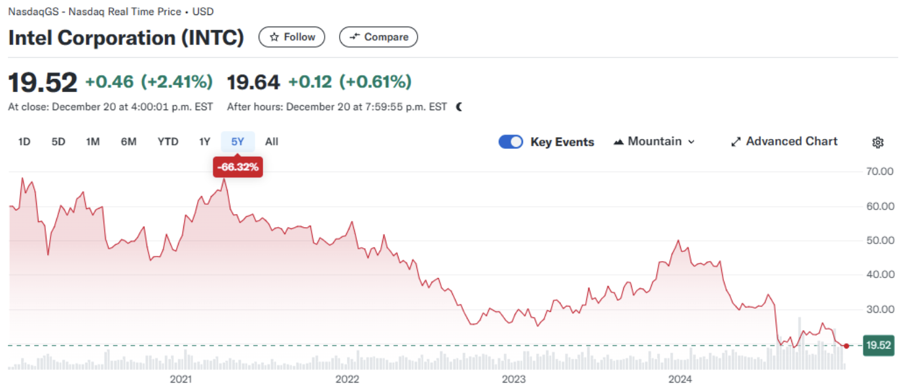
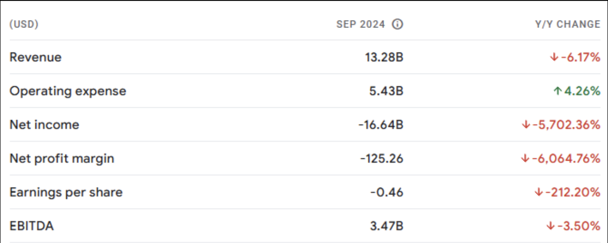
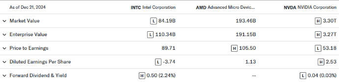
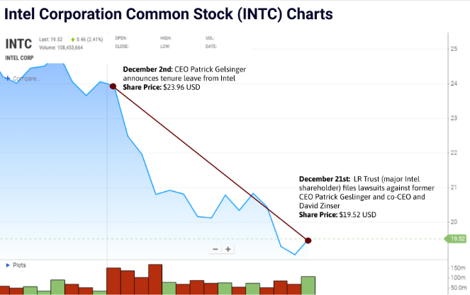

With recent ex-CEO Patrick Geslinger being forced into resignation by board of directors, as well as shareholder’s lawsuits against the former executive for unfulfilled plans, misleading financial statements, and false claims on financial growth potential, the American chip manufacturing firm has continued to face severe declines in quarterly earnings as well as dwindling market share prices throughout 2024. As they struggle to find a footing in the ever-evolving computer processing industry, Intel’s recent mishaps and lack of organization does not trend towards a positive direction for the future of the firm.
This article goes in depth into Intel’s fall from grace; looking at how one of the once most established technological companies in the world began it’s downturn in the computer processing industry, how it lost the trust of its customers, and how the companies misjudgements and reliance on past successes lead to the dismissal of their market dominance in the computer technological industry.
Short-Term Uncertainty and Long-Term Decline
While the tech giant had an ambitious rebound in stock price in late 2023 due to claims of cutting costs, downsizing it’s workforce, and next generation manufacturing advancements, much of their intended plan under CEO Pat Geslinger did not come to fruition, resulting the short-term volatility of the stock proving to be crucial as Intel’s share prices have dropped down 59% compared to the previous year, sitting at a value of $19.52 USD as of late December.
For long-term shareholders, the picture is even bleaker, with Intel’s stock having plummeted by a staggering 68% over the last five years. This trend not only erodes investor confidence but also raises serious questions about the company’s ability to adapt to an industry defined by rapid innovation and technological disruption.
Source: Yahoo Finance
With Intel reporting a $16.6B net loss in Q3 of 2024 as well as a $0.46 net loss per share, Intel will need to return to the drawing board to heavily restrategize its future plans for the company for how operations will be reworked in the near future.
Source: Google Finance
Lack of Innovation & Technological Advancements
While the corporation Intel was an established leader in Silicon Valley throughout the 90s to the 2010s, known for their efficient microprocessors and advanced graphic card units, their complacency in dominating the market in the early stages of the semiconductor industry caused a tremendous reduction in the companies technical advancements in their processors and chips, losing the customers loyalty who felt underwhelmed by it’s new line of units. For years, Intel relied on its dominant market position and existing customer base without adequately responding to shifts in consumer needs or industry trends. This overreliance on previous strategies led to many missed opportunities in new, emerging fields like artificial intelligence, edge computing, and ARM-based processors, which helped give rival competitors a huge edge over Intel.
Intel’s inability to adapt to market trends and technological shifts forced itself into a one-way alley, where their lack of creativity lost customer interest and was evident through the decrease in the company's profits.
Rival Competitors
With Intel's stagnant age of progression, it gave birth to opportunities for rival firms in the semiconductor industry to create new innovations and gain market share. Competitors like AMD and NVIDIA are prime examples, who in recent years have outpaced Intel in releasing cutting-edge products that cater to both consumer and enterprise markets at a more affordable price point, with more processing advancements.
With AMD’s Ryzen processors and NVIDIA’s GPU series having huge performance increases with the implementation of AI computing and processing, the 2 rival companies have steadily consumed Intel’s previous market share. Meanwhile, Intel’s delays in transitioning to smaller, more efficient process nodes (such as 10nm and 7nm technologies) have left it falling behind competitors who are already advancing toward 3nm chips. Intel’s reluctance or inability to innovate at a pace matching the industry standards has left the company relying on older product lines that fail to meet modern demands. This stagnation has not only impacted Intel’s position in the consumer market but has also weakened its standing in lucrative sectors like AI, cloud computing, and data centers, becoming a secondary option for consumers and businesses.
Source: NASDAQ
As observed from the table, rival competitors AMD and NVIDIA currently hold the 2 highest market & enterprise value in the semiconductor industry, with Intel now trailing behind both companies at a value of $84.19 billion USD. While Intel lost over half its market share prices in the last 5 years, AMD stock value has risen by 170%, and NVIDIA shares having astronomical growth of around 2000% in the same period.
Lost of loyalty with Customers and Investors
Intel’s inability to stay in tune with its customers has also contributed to its decline. Inconsistent product roadmaps, frequent delays, and underwhelming performance improvements have frustrated both individual consumers and the enterprise investors. Many customers now view Intel as an unreliable partner, especially when other companies offer more consistent and compelling alternatives. The dissatisfaction with Intel’s performance is evidently reflected through their market value, as share prices for INTC are at a record low, insinuating people’s lack of trust with the manufacturer.
This disconnect extends beyond product offerings to the company’s communication strategy. Intel’s overly optimistic projections and failure to deliver on promises have alienated investors and damaged its credibility, shown through the attempts by major Intel shareholder LR Trust at filing a lawsuit against former CEO Pat Gesligner and current co-CEO David Zinser, where the shareholder accuses Gesligner of misleading disclosures, false guidance, and demands the return of the $207 million salary he earned during his tenure.
Source: NASDAQ
Next Steps: Can Intel Turn Things Around?
While Intel’s economic future is highly uncertain and unpredictable, the company can still use its brand name recognition to its advantage to regain its customers' trust and rebuild its core company.
Intel must prioritize regaining its technological edge by accelerating the development of advanced process nodes and investing in next-generation technologies such as AI, quantum computing, and custom silicon solutions. Collaborating with key players in emerging markets could also help Intel regain relevance, with partnerships in areas like AI and cloud computing being able to provide the expertise and market access necessary to drive growth. Expanding beyond traditional markets into areas like AI powered vehicles and space engineering could open new revenue opportunities and mitigate reliance on declining segments.
Regaining the trust of consumers and investors is also vital, as Intel needs to communicate transparently with its stakeholders, offering realistic projections and delivering on promises to restore investor and customer confidence. Intel has begun this process through the pursuit of a new leadership team with clear goals and priorities, but it may still not be enough to navigate the firm in the right course.
Although Intel remains a prominent name in the technology industry, the many mistakes that have damaged its reputation following the overpowering growth of major competitors make it increasingly difficult to trust the company’s overall direction. As things currently stand, Intel’s past performance paints a picture of further decline in revenue and share prices in the future, with most likely little to no recovery in the corporation’s earnings. While the company still has the potential to recover, the path forward will require extraordinary effort, innovation, and a willingness to embrace change.
Glossary of Financial Terms
Market Capitalization: The total dollar market value of a company's outstanding shares of stock. Used by investors to determine a company's size as an alternative for sales or total asset value.
Volatility: The degree of variation in a stock’s price, which can lead to rapid increases or decreases in its value.
Enterprise Value: The sum of a company's market capitalization and any debts, minus cash or cash equivalents on hand.
Diluted Earnings per share: Measure of a company's earnings per share if all convertible securities were exercised. Dilutive securities are securities that can be converted to common stock. Dilution devalues a shareholder's existing equity stake and reduces a firm's earnings per share.
Published by: Charlie Wang